ECMWF HRES · radiation, 2 m temperature, 10 m wind · 24 Jan 2025 12 UTC · 0.1°
x =weather data
y =energy prices
high-dimensional · high volumeweather data is literally big data
low-dimensional · low volumeone number per 15 minutes
Problem setting
2 distinct things to learn
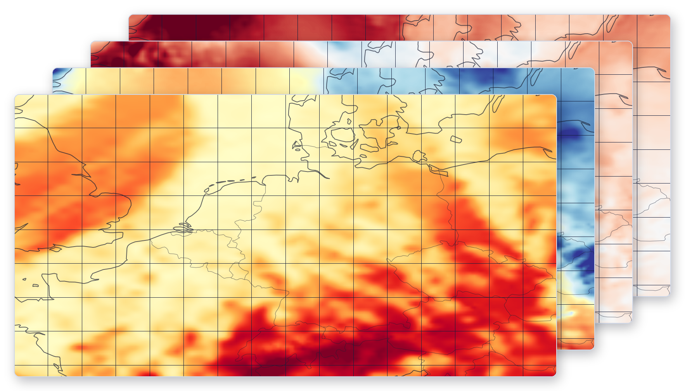
x = weather data
f
y = energy prices
1
Semantic understanding of high-dimensional x
Understanding the weather: how fronts move, how high- and low-pressure systems behave, etc.
2
The relationship between higher-level abstractions of x and y
How weather patterns influence the price: fronts, pressure systems, storms, atmospheric rivers.
Two different tasks, with very different amounts of data.
Weather data: abundant. Prices: one number per 15 minutes.
Approach
The classical approach: turn the weather into a table
Approach
The classical approach: count cats and dogs in an image
Said no one ever
Raw weather data
Video frames
Feature extractore.g. pick a few locations
Feature extractore.g. pick a few pixels
Feature engineeringhand-crafted, by a domain expert
evening dipnocturnal low-level jetramp rate
Feature engineeringhand-crafted, by a vision engineer
edgescolour histogramcorners
Weather informationone row per timestamp
Hour
Berlin wind 100 m
Hamburg wind 100 m
…
Munich radiation
10:00
…
11:00
…
12:00
…
⋮
…
Pixel tableone row per frame
Frame
Pixel 1 red
Pixel 2 green
…
Pixel N blue
0
…
1
…
2
…
⋮
…
Boosted treesXGBoost, LightGBM
Price forecast
Cat & dog count
X cats
Y dogs
!
Both objectives at once
Understanding weather and the weather–price relationship, with very limited supervision.
!
Poor feature extraction
A handful of locations over-simplifies the high-dimensional structure of the weather.
!
Hand-crafted features
Purpose-specific feature engineering, built for this one target.
!
Special purpose
The pipeline does not generalise to adjacent tasks.
Embed first, predict later.
Long established in computer vision and language models. We take these ideas to real-world problems beyond images and text.
Approach
Embed first, predict later: split the two tasks
1
Semantic understanding of high-dimensional xunderstanding the weather
2
The relationship between higher-level abstractions of x and yhow weather patterns influence the price
Weather dataglobal forecast fields
Foundation modelpre-trained · frozen
Embeddingslatent representation
Embeddingsstored · reused
Lightweight modellinear or a small MLP
Price forecast
backbone
downstream task
What we mean by a foundation model
A general-purpose model, trained with self-supervision on broad data: reconstruct masked input or predict the next step. It learns representations of the underlying data.
Approach
Good for us: AI weather models are on the rise
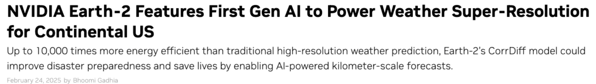
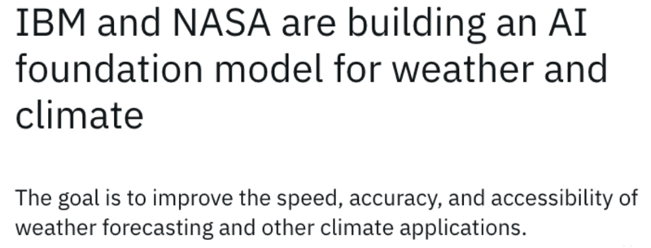
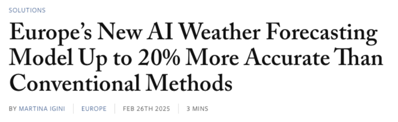
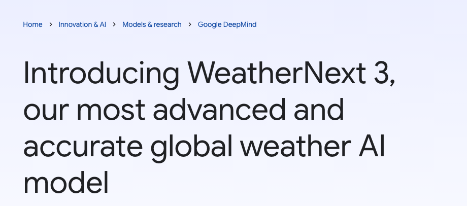
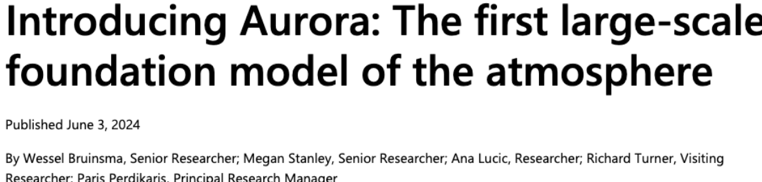
Built by Microsoft Research
Bodnar et al. 2025, Nature
our choice
The backbone
Microsoft Aurora: a foundation model for the atmosphere
a.k.a. an AI weather forecasting model
Forecasting performance
Temperature850 hPa temperature RMSE [K]
Wind vector850 hPa wind vector RMSE [m/s]
IFS HRES ECMWF · physics-based
0.631.19
1.603.23
Aurora operational · ML
0.560.95
1.432.67
lead time [days]
13
13
-50-20-10-5-2-1125102050
better ← % difference in RMSE vs IFS HRES → worse
WeatherBench 2, 2022, vs IFS analysis. Rasp et al., JAMES 2024.
Aurora beats the gold standard in weather forecasting.
t−1, t
weather fields
Encoder
weather embeddings
3D latent tokens · spatial, temporal and scale encodings
Decoder
t+1, … t+n
weather fields
Autoregressive model trained on decades of weather data from many weather models
Feature extractor: that is what we need
We use the pre-trained (frozen) Aurora encoder to generate semantically rich embeddings of raw weather data.
Inside the embeddings
Visualizing the latent space: using dimensionality reduction
Raw embeddings2048 dimensions per day and cell. Not human-readable.
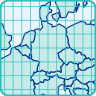
Dimensionality reduction on a mapPrincipal component analysis (PCA), 2048 → 3.
Combine with external expert knowledgeEmbeddings crossed with the classification of large-scale weather systems.
1 · Raw embeddings
2 · Dimensionality reduction on a map
3 · Combine with external expert knowledge
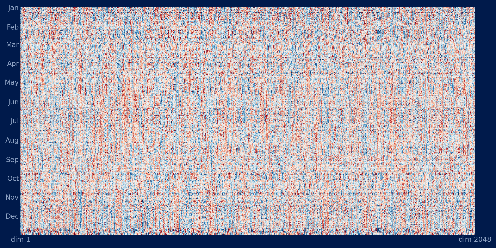
Raw embeddings. One row per day of 2025, one cell over central Germany, 2048 dimensions.
Dimensionality reduction, here principal component analysis, makes the data visible.
Large-scale weather pattern"Großwetterlage"
The German weather service (DWD) classifies the daily large-scale circulation over Central Europe by hand into 29 categories.
Principal component analysis: 2048 dimensions → 3.
Days with the same expert label sit together in the latent space.
Five categories we picked
Wzwest, cyclonic
SWzsouthwest, cyclonic
HMhigh over Central Europe
HBhigh over the British Isles
SWasouthwest, anticyclonic
All 29 categories, folded into two
anticyclonichigh-pressure patterns · n = 192
cycloniclow-pressure patterns · n = 158
Visualization of embeddings along the first 3 principal components, coloured by the expert's label.
Visualization of embeddings along the first 3 principal components, coloured by the expert's label.
Showcase
Simplified setup: Predict Germany's day-ahead price from weather alone
Target day-ahead electricity price, Germany · Input weather only · Period full year 2025
A
Conventionalhand-crafted tabular features
weather maps
pick locations
feature engineering
table
boosted trees
price
B
Embeddings + linearPCA, then a linear regression
C
Embeddings + MLPa small 3-layer network
backbone
weather maps
Aurora encoder
embeddings
downstream task
PCA
linear regression
price
Often all you need. The backbone did the non-linear work: what was tangled in raw weather is now linearly separable.
small MLP
price
Showcase
Performance
all hoursdaytime, 06–16 UTC: where weather matters most for the price
DE day-ahead price, full year 2025, weather-only inputs
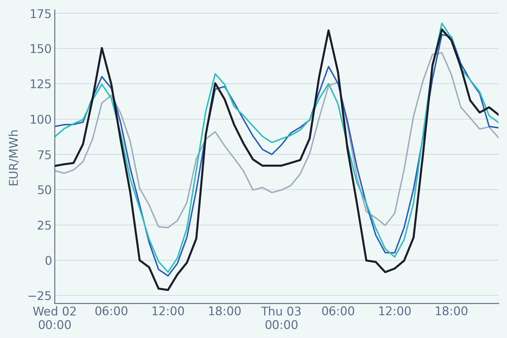
actual priceA · LightGBMB · linearC · MLP
Two days in April 2025, DE day-ahead price in EUR/MWh. Actual price, the conventional LightGBM, and the two embedding models, all on weather only.
Summary
Embed first, predict later: overview
Weather dataglobal forecast fields
Aurorafoundation model · frozen
Aurora 1.5foundation model · frozennew
Any foundation modelpre-trained · frozen
Embeddingsstored · reused
Lightweight modellinear or a small MLP
Price forecast
backbone
downstream task
…and other targets: one set of embeddings, one small head per target
Generation forecast
Load forecast
Probability of wind turbine icing
Clustering and similarity search: find days that look alike
…and other data sources. Here: satellite, for short horizons
Satellite dataMeteosat-12 · EUMETSAT
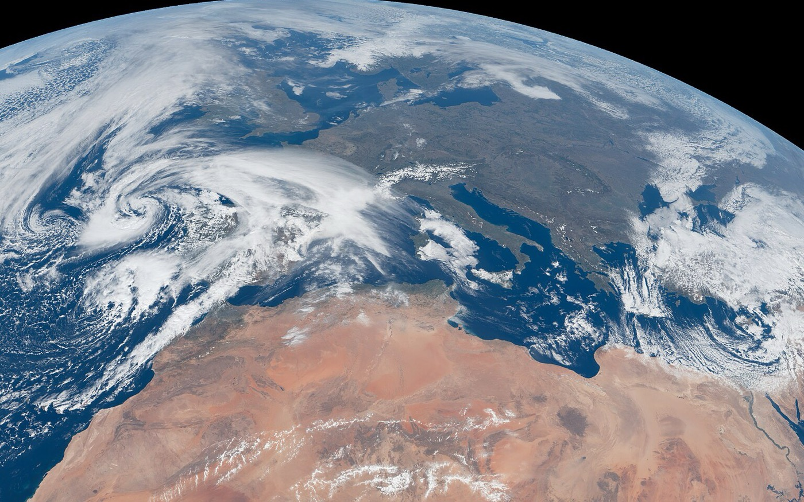
Satellite foundation modelpre-trained · frozen
1
Better forecasts
Lower error than the conventional approach, with a linear head already.
2
General purpose
Works out of the box without hand-crafted features.
3
Modular
Swap the backbone, add a target, or add a data source through its own foundation model and merge the embeddings. Everything else stays the same.
Beyond energy
But what does this mean to you?
Nothing here is specific to energy.
Weather dataglobal forecast fields
Satellite imagerytiles over a region
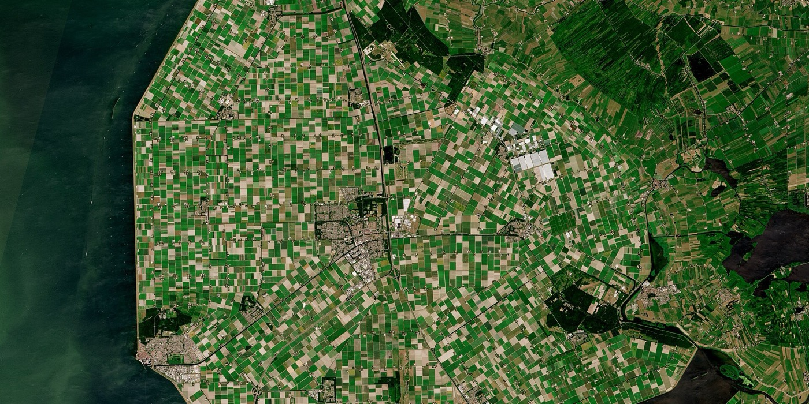
Sensor telemetrychannels per machine, hourly
Population graphplaces · search trends · busyness
Website clickstreampages · clicks · sessions
Aurorafoundation model · frozen
Earth-observation foundation modelpre-trained · frozen
Time-series foundation modelpre-trained · frozen
Graph foundation modelpre-trained · frozen
Sequence foundation modelself-trained · frozen
Embeddingsstored · reused
Lightweight modelslinear or a small MLP, one per task